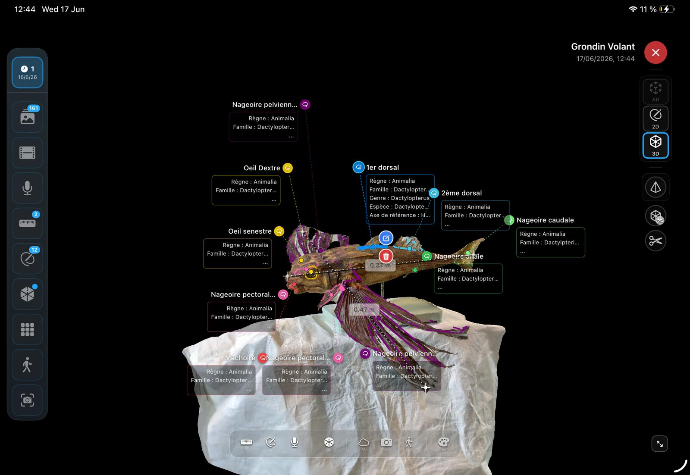
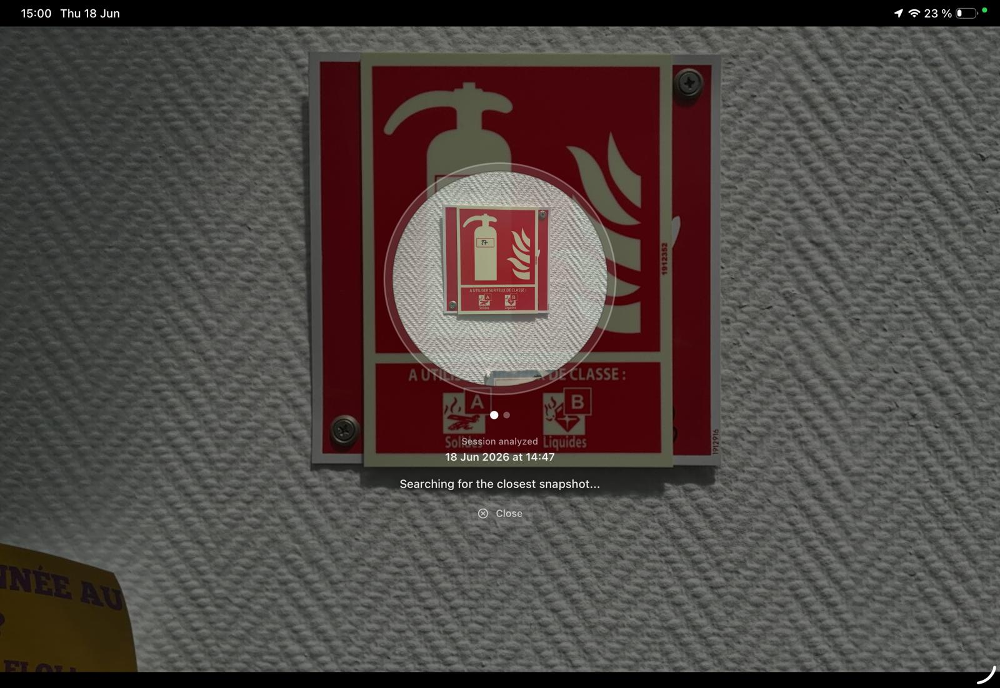
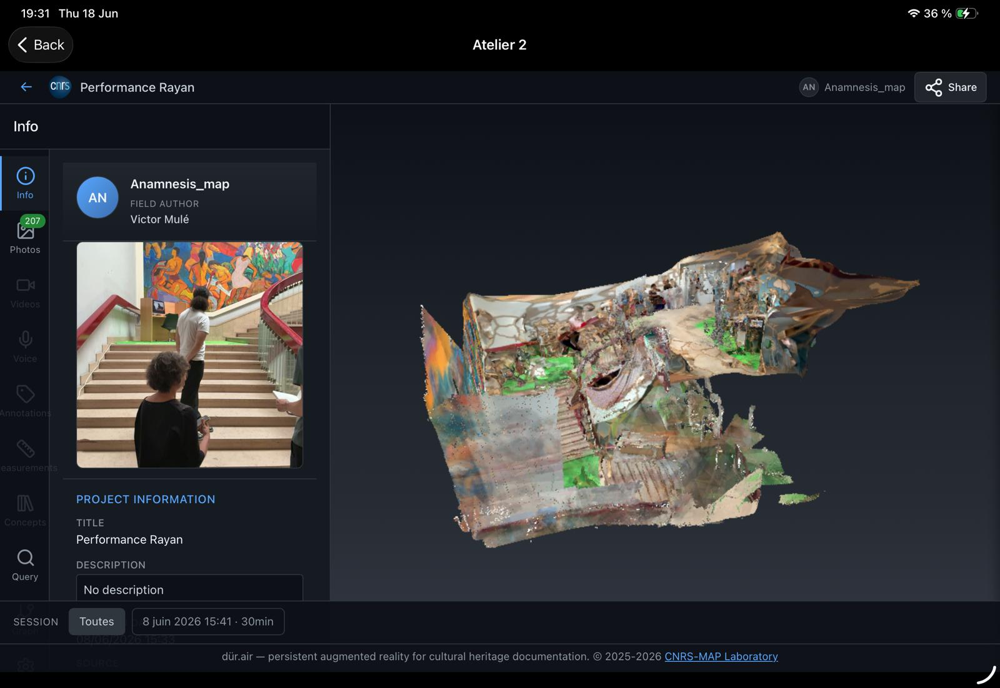

Objectif de l’évaluation
Le stage visait à évaluer la pertinence et la prise en main de Dür.air en atelier, à l’École supérieure d’art d’Avignon (ESAA), auprès d’utilisateurs peu familiers avec la photogrammétrie. L’application leur a paru accessible, mais certaines fonctions restent difficiles à intégrer au flux de travail du restaurateur.
L’évaluation a porté sur la pertinence de l’outil en conservation-restauration et sur sa prise en main. Il s’agissait de vérifier son intégration au travail quotidien, sans expertise préalable importante.
Profil des testeurs
Aucun testeur, hormis l’auteur, n’avait pratiqué la photogrammétrie. Aucun ne possédait d’iPad.
1. Utilisation en atelier
À l’ESAA, les œuvres étaient déjà présentes en atelier. Nous n’avons donc pas testé de situation d’« aller-voir » préalable au devis. Les essais ont porté sur le constat d’état et le suivi des traitements. Le poisson volant de Laura (5ᵉ année), étudiante particulièrement réceptive, a servi de cas d’étude récurrent.

1.1 Accompagnement des utilisateurs néophytes
Les premières difficultés apparaissent dès la prise de vues. Le débutant doit choisir le cadrage, la distance, le recouvrement et l’éclairage. Il doit aussi reconnaître les matériaux et les formes qui risquent de poser problème.
Un accompagnement pendant l’acquisition serait utile. Je n’ai toutefois pas suivi le tutoriel et ne peux donc pas préciser si ces points y sont déjà expliqués.
1.2 Acquisition photogrammétrique et photographies de constat
Les photographies destinées au modèle 3D ne répondent pas toujours aux besoins du constat d’état. La reconstruction demande des images relativement homogènes : il faut tourner autour de l’objet, garder des cadrages assez larges et prévoir un recouvrement adapté. Le constat nécessite aussi des photographies de détail, dont le cadrage dépend de l’altération ou de la zone à documenter.
En pratique, deux campagnes se succèdent : l’acquisition du modèle 3D, puis la documentation photographique de l’état de conservation.
Une session peut réunir plusieurs centaines, voire un millier d’images. Leur classement devient alors essentiel. Il serait utile de les organiser selon leur fonction, et d’associer une photographie de détail directement à une annotation.
Il faudrait également pouvoir prendre une photographie directement depuis une annotation. Cela éviterait de quitter Dür.air pour utiliser l’appareil photo de l’iPad, puis d’y revenir pour importer l’image.
1.3 Compléter une acquisition après calcul
Il fallait quitter l’acquisition pour lancer le calcul photogrammétrique. Le résultat révélait parfois une zone incomplète ou mal photographiée. Les utilisateurs ne trouvaient pas comment reprendre l’acquisition pour ajouter les images manquantes. Nous n’avons pas pu déterminer si cette fonction était absente ou difficile à trouver.
Il fallait souvent recommencer toute la série. La session initiale devenait peu utile, sans que les utilisateurs sachent la supprimer. Une prise de vues complète demandait environ 10 à 30 minutes, selon l’objet : la perte de temps était importante.
1.4 Suivre un objet entre plusieurs séances
En atelier, l’objet peut être déplacé, retourné ou démonté entre deux séances, ce qui le distingue de nombreux sujets architecturaux. Il serait utile de recaler les acquisitions successives d’un même objet, y compris manuellement. Un repère physique placé au centre de la scène pourrait faciliter ce travail. Leur superposition permettrait de comparer l’état initial, les étapes du traitement et l’état final.
La création d’une seconde session posait parfois problème : l’application cherchait à reconnaître une image ou une configuration spatiale antérieure, sans toujours y parvenir.

1.5 Filmer tout en prenant des photographies
Filmer est très pratique pour documenter une manipulation ou un traitement, car la vidéo conserve la continuité de l’opération. Il faudrait aussi pouvoir prendre des photographies sans interrompre l’enregistrement, pour garder à la fois une vidéo complète et des images fixes des moments importants.

1.6 Le LiDAR
L’absence de visualisation du LiDAR pendant la prise de photographies ou de vidéos est perturbante : il est difficile de savoir si la zone cadrée est bien enregistrée.
La reconstruction semble se recalculer plutôt que s’enrichir progressivement. Certaines zones déjà acquises disparaissent ou perdent en qualité pendant que l’on vise une autre partie de l’objet.
2. Intérêt pour les visites préalables au devis
L’« aller-voir » paraît être l’un des usages les plus pertinents de Dür.air. Avant un devis, le restaurateur doit parfois examiner de nombreux objets en peu de temps. Un modèle rapide, même peu détaillé, présente alors un intérêt pratique.
Le modèle permet de retrouver une dimension après la visite, si sa précision convient au besoin. Il peut éviter un déplacement pour une mesure oubliée. Lorsque la visite n’est pas facturée, la rapidité de l’acquisition compte particulièrement.
La qualité des images de l’iPad reste insuffisante pour toute la documentation : des photographies prises avec un boîtier restent nécessaires. Dür.air les complète par une capture rapide d’informations spatiales. Les essais à l’ESAA ne permettent toutefois pas de conclure sur cet usage, puisqu’ils concernaient des œuvres déjà présentes en atelier.
3. Annotation et constat d’état
Le constat d’état a révélé les principaux écarts entre les fonctions de l’outil et nos besoins.
3.1 Relation entre photographie, LiDAR et photogrammétrie
Sur une photographie, l’utilisateur s’attend à tracer sur la surface qu’il voit. Lors des essais, le tracé semblait pourtant projeté sur la géométrie du LiDAR. Celui-ci fournit une référence spatiale et une géométrie mesurable, mais sa représentation reste parfois trop peu détaillée pour examiner les altérations. Le modèle photogrammétrique répond davantage à ce besoin visuel.
Un décalage apparaît donc entre la photographie et le support du tracé, et certaines annotations deviennent difficiles à localiser précisément. La relation entre ces représentations gagnerait à être plus claire pour l’utilisateur.
3.2 Précision du tracé et choix du point de vue
Plusieurs utilisateurs ont recommencé leurs annotations, car ils comprenaient mal la projection du tracé dans l’espace.
Le choix du point de vue posait aussi problème : l’utilisateur orientait le modèle pour montrer une altération, mais l’application le ramenait parfois vers une photographie prise sous un autre angle. Il avait alors l’impression de perdre le contrôle de la représentation.
La sélection et la localisation des éléments manquaient parfois de précision. Pour un constat d’état, chaque altération doit pourtant pouvoir être retrouvée sans ambiguïté.
3.3 Organisation des annotations
Un constat peut réunir plusieurs dizaines d’annotations sur un même objet, et leur gestion devient alors plus difficile. Il faudrait pouvoir les classer par typologie et les retrouver rapidement. L’affichage de groupes permettrait de limiter la surcharge visuelle du modèle et faciliterait la consultation du constat.
4. Prise en main générale
L’interface a été perçue comme simple et intuitive. Après quelques heures, les testeurs savaient créer un projet et lancer une acquisition. Ils pouvaient aussi consulter les données et produire des annotations.
5. Limites matérielles et consultation à distance
Aucun des testeurs ne possédait personnellement d’iPad. L’accès à ce matériel constitue donc une contrainte, et il détermine aussi la qualité des prises de vues. L’intégration de photographies réalisées avec un appareil externe serait utile.
La consultation en dehors de la tablette a aussi posé problème. Certains appareils n’affichaient pas correctement la visualisation web. Les étudiantes ne pouvaient pas non plus poursuivre chez elles le travail sur les acquisitions de la journée.
Elles hésitaient donc à transmettre un lien à une institution ou à un professionnel, sans pouvoir garantir que le projet s’ouvrirait correctement. La consultation doit être fiable sur différents appareils, et permettre d’y poursuivre le travail d’annotation.
Premier bilan
Les utilisateurs comprennent rapidement l’intérêt de Dür.air : l’outil réunit le modèle de l’objet, les photographies, les annotations et les mesures. Sa prise en main reste accessible aux débutants.
Les essais ont toutefois révélé des difficultés pour le constat d’état et le suivi des traitements. Les principales pistes d’amélioration concernent :
- l’organisation des photographies, leur association aux annotations et la prise de vue directement depuis une annotation ;
- la reprise d’une acquisition après un premier calcul ;
- la compréhension et la précision de la relation entre photographie, LiDAR et modèle photogrammétrique ;
- la précision des tracés et la maîtrise du point de vue ;
- le classement et l’affichage des annotations ;
- le recalage des acquisitions successives d’un même objet ;
- la prise de photographies sans interrompre un enregistrement vidéo ;
- la visualisation du LiDAR et la stabilité de la reconstruction pendant la prise de vues ;
- l’intégration de photographies externes ;
- la consultation fiable des projets et la poursuite du travail sur différents appareils.
Prolongements du travail
À partir de ces essais, j’ai développé deux plateformes qui explorent l’annotation et la présentation des acquisitions de Dür.air.
Pygmalion
J’ai développé Pygmalion pour permettre à mes camarades de poursuivre les annotations sans la tablette, depuis un ordinateur, sur un modèle acquis avec Dür.air. J’y ai ajouté un système de calques pour organiser les annotations et séparer les types d’observations. Chaque calque peut être affiché ou masqué : le modèle reste lisible, même lorsque les annotations se multiplient.
Ouvrir PygmalionImpression d’archive
J’ai conçu Impression d’archive pour construire un récit à partir des acquisitions de Dür.air : les données sont présentées dans un parcours, plutôt que consultées isolément. Cette approche permettrait de raconter l’histoire d’un objet ou les étapes d’une intervention, et explore un usage des acquisitions pour la présentation et la transmission du travail de conservation-restauration.
Ouvrir Impression d’archive